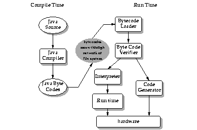

Next Prev Contents
Security in Java
- 6.1 - Memory Allocation and Layout
-
- 6.2 - The Byte Code Verification Process
-
- 6.3 - Security Checks in the Bytecode Loader
-
- 6.4 - Security in the Java Networking Package
-
- 6.5 - Summary
-
Security commands a high premium in the growing use of the Internet for products and services ranging from electronic distribution of software and multimedia content, to "digital cash". The area of security with which we're concerned here is how the Java compiler and run-time system restrict application programmers from creating subversive code.
The Java language compiler and run-time system implement several layers of defense against potentially incorrect code. The environment starts with the assumption that nothing is to be trusted, and proceeds accordingly. The next few sections discuss the Java security models in greater detail.
6.1 Memory Allocation and Layout
One of the Java compiler's primary lines of defense is its memory allocation and reference model. First of all, memory layout decisions are not made by the Java language compiler, as they are in C and C++. Rather, memory layout is deferred to run time, and will potentially differ depending on the characteristics of the hardware and software platforms on which the Java system executes.
Secondly, Java does not have "pointers" in the traditional C and C++ sense of memory cells that contain the addresses of other memory cells.The Java compiled code references memory via symbolic "handles" that are resolved to real memory addresses at run time by the Java interpreter. Java programmers can't forge pointers to memory, because the memory allocation and referencing model is completely opaque to the programmer and controlled entirely by the underlying run-time system.
Very late binding of structures to memory means that programmers can't infer the physical memory layout of a class by looking at its declaration. By removing the C and C++ memory layout and pointer models, the Java language has eliminated the programmer's ability to get behind the scenes and manufacture pointers to memory. These features must be viewed as positive benefits rather than a restriction on the programmer, because they ultimately lead to more reliable and secure applications.
6.2 The Byte Code Verification Process
What about the concept of a "hostile compiler"? Although the Java compiler ensures that Java source code doesn't violate the safety rules, when an application such as the HotJava Browser imports a code fragment from anywhere, it doesn't actually know if code fragments follow Java language rules for safety: the code may not have been produced by a known-to-be trustworthy Java compiler. In such a case, how is the Java run-time system on your machine to trust the incoming bytecode stream? The answer is simple: the Java run-time system doesn't trust the incoming code, but subjects it to bytecode verification.
The tests range from simple verification that the format of a code fragment is correct, to passing each code fragment through a simple theorem prover to establish that it plays by the rules:
- it doesn't forge pointers,
- it doesn't violate access restrictions,
- it accesses objects as what they are (for example,
InputStream objects are always used as InputStreams and never as anything else).
A language that is safe, plus run-time verification of generated code, establishes a base set of guarantees that interfaces cannot be violated.
6.2.1 The Byte Code Verifier
The bytecode verifier traverses the bytecodes, constructs the type state information, and verifies the types of the parameters to all the bytecode instructions.
The illustration shows the flow of data and control from Java language source code through the Java compiler, to the bytecode verifier and hence on to the Java interpreter. The important issue is that the Java bytecode loader and the bytecode verifier make no assumptions about the primary source of the bytecode stream--the code may have come from the local system, or it may have travelled halfway around the planet. The bytecode verifier acts as a sort of gatekeeper: it ensures that code passed to the Java interpreter is in a fit state to be executed and can run without fear of breaking the Java interpreter. Imported code is not allowed to execute by any means until after it has passed the verifier's tests. Once the verifier is done, a number of important properties are known:
- There are no operand stack overflows or underflows
- The types of the parameters of all bytecode instructions are known to always be correct
- Object field accesses are known to be legal--private, public, or protected
While all this checking appears excruciatingly detailed, by the time the bytecode verifier has done its work, the Java interpreter can proceed, knowing that the code will run securely. Knowing these properties makes the Java interpreter much faster, because it doesn't have to check anything. There are no operand type checks and no stack overflow checks. The interpreter can thus function at full speed without compromising reliability.
6.3 Security Checks in the Bytecode Loader
While a Java program is executing, it may in its turn request that a particular class or set of classes be loaded, possibly from across the network. After incoming code has been vetted and determined clean by the bytecode verifier, the next line of defense is the Java bytecode loader. The environment seen by a thread of execution running Java bytecodes can be visualized as a set of classes partitioned into separate name spaces. There is one name space for classes that come from the local file system, and a separate name space for each network source.
When a class is imported from across the network it is placed into the private name space associated with its origin. When a class references another class, it is first looked for in the name space for the local system (built-in classes), then in the name space of the referencing class. There is no way that an imported class can "spoof" a built-in class. Built-in classes can never accidentally reference classes in imported name spaces--they can only reference such classes explicitly. Similarly, classes imported from different places are separated from each other.
6.4 Security in the Java Networking Package
Java's networking package provides the interfaces to handle the various network protocols (FTP, HTTP, Telnet, and so on). This is your front line of defense at the network interface level. The networking package can be set up with configurable levels of paranoia. You can
- Disallow all network accesses
- Allow network accesses to only the hosts from which the code was imported
- Allow network accesses only outside the firewall if the code came from outside
- Allow all network accesses
6.5 Summary
Java is secure to survive in the network-based environment. The architecture-neutral and portable aspects of the Java language make it the ideal development language to meet the challenges of distributing dynamically extensible software across networks.
Next Prev Contents
The Java(tm) Language Environment: A White Paper